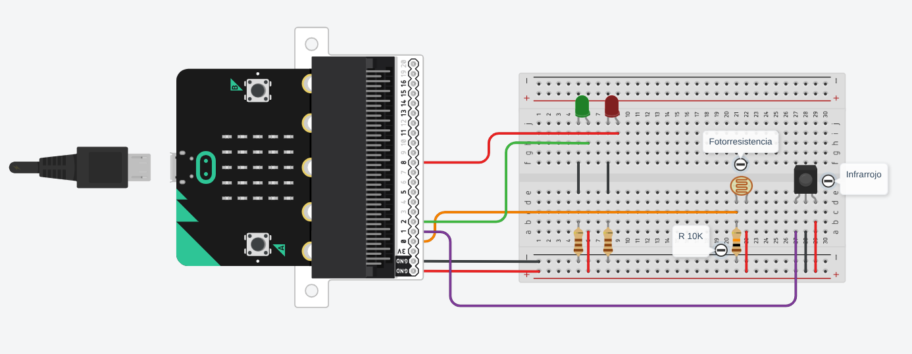

Maker STEAM
"Tu equipo de ingeniería espacial está a cargo del Bio-Garage Cúbico, la estación botánica que alimenta a la colonia humana. Las condiciones climáticas en Marte son extremas. Deben idear un sistema automatizado que vigile los niveles de luz solar, detecte amenazas de aproximación y emita alertas inmediatas."
Trabajarán como un laboratorio aeroespacial real: dividiendo roles de diseñadores mecánicos, técnicos de cableado y arquitectos de software. Todo el hardware debe funcionar de manera integrada y sincronizada.
El garage requiere una infraestructura física robusta y ordenada antes de acoplar e interconectar los componentes electrónicos.
Los alumnos escribirán el código en el editor de Python de micro:bit. El programa debe ejecutar un bucle infinito que evalúe las condiciones del entorno.
Los sensores de la estación deben conectarse directamente a los pines analógicos y digitales de la micro:bit:
| Componente de la estación | Tipo de señal | Pin asignado | Misión en el Bio-Garage |
|---|---|---|---|
| Fotoresistencia (LDR) | Entrada analógica | Pin 0 |
Mide la luz ambiental (Detecta ciclos de día y noche en Marte). |
| Sensor infrarrojo analógico | Entrada Analógica | Pin 1 |
Detecta meteoros, intrusos o astronautas cerca del acceso. |
| Diodo LED Verde | Salida Digital | Pin 2 |
Luz de baliza: Indica que el garage está seguro, estable y operativo. |
| Diodo LED Rojo | Salida Digital | Pin 8 |
Luz de alarma: Destella inmediatamente ante situaciones de peligro crítico. |
Los sensores de la estación deben conectarse directamente a los pines analógicos y digitales de la micro:bit:

Las lecturas que devuelven los sensores analógicos cambian constantemente dependiendo del rebote de la luz en las paredes o la iluminación de las lámparas de la sala de clase.
Los equipos deberán abrir el monitor en serie en el editor de Python, usar comandos de salida visual (print(nivel_luz)) para examinar las lecturas del hardware en vivo y ajustar los valores numéricos de las constantes en el script mediante ensayo y error.
Este programa establece la lógica de control secuencial y las prioridades de eventos que gobernarán la estación mediante un bucle infinito.
from microbit import * # Calibración inicial de umbrales nivel_luz = 0 proximidad = 0 while True: nivel_luz = pin0.read_analog() proximidad = pin1.read_analog() if proximidad < 100: # ALERTA DE SEGURIDAD INTERMITENTE display.show(Image.STICKFIGURE) pin8.write_digital(1) # LED Rojo ON pin2.write_digital(0) # LED Verde OFF sleep(200) pin8.write_digital(0) # Efecto Destello sleep(200) elif nivel_luz < 300: # MODALIDAD NOCHE display.show(Image.ASLEEP) pin2.write_digital(1) # LED Verde ON pin8.write_digital(0) else: # ESTADO ESTABLE DIURNO display.show(Image.TARGET) pin2.write_digital(1) pin8.write_digital(0) sleep(100)